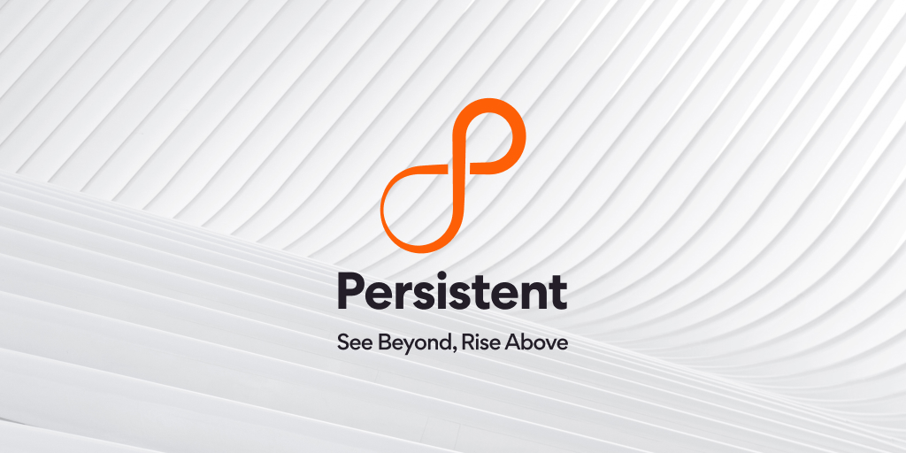

Persistent Systems Limited

Role: Software Engineer
Duration: July 2022 - August 2023
Responsibilities:
- Contributed to a ReactJS-based internal project, helping develop a file-generating platform that enhanced
project delivery efficiency by 25% while collaborating effectively with cross-functional teams.
- Implemented features for IBM AppConnect using Node.js and Express.js to integrate various web applications,
resulting in 0 missed communication and providing robust, scalable solutions, demonstrating problem-solving.
- Leveraged Jenkins, GitHub, and Postman for API testing, ensuring smooth feature deployment and achieving a
high code reliability rate through rigorous unit testing.
- Supported quality assurance through detailed sprint planning in JIRA and led client demos and knowledge
transfer sessions.